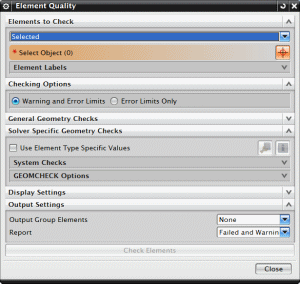

根据以下项使用单元质量命令来评估模型中单元的质量：
特定求解器要求的特定质量准则。对于给定的质量检查，如宽高比，可以分别指定警告限制和错误限制值。还可以使用警告颜色和错误颜色选项指定不同颜色，以用于显示违反这些限制的单元。
还可以根据单元的类型选择不同的单元质量准则和指定不同的质量阈值。如果选中使用单元类型特定值复选框，则可以为不同类型的单元选择不同的质量检查和指定不同的质量阈值。
可以使用单元质量检查对话框中的输出设置选项，让软件自动将某些单元放入仿真导航器中名为 OUTPUT GROUP 的新组中。此组将覆盖任何现有的输出组。
